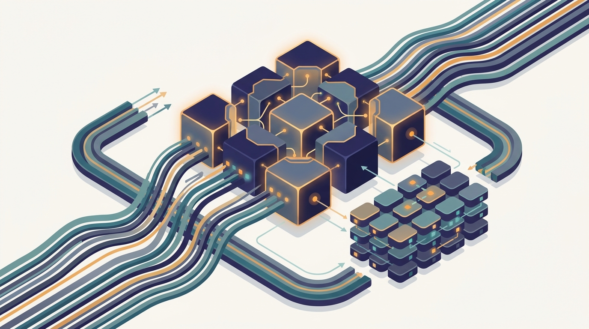

"I used to fit on one GPU and answer in a single forward pass. Now my attention layers live on four devices, my later blocks on a different node, my KV cache is paged across a cluster, and my prefill happens in another building. I am, in every sense, a distributed system that occasionally returns a sentence."
A Shard That Believes It Is the Whole Model
This is the chapter where a single inference request becomes a distributed computation: one model split across tensor-parallel devices and pipeline stages, a KV cache paged across nodes, prefill and decode running on separate hardware, and a scheduler that batches requests over the whole cluster. Chapter 22 costed one node and one token; Chapter 23 multiplied that node into a fleet of replicas that each still fit on a single machine. The premise that survived both chapters was that the model lives on one accelerator and the only question is how many copies to run. A frontier-scale language model breaks that premise: its parameters exceed any single device's memory, so even serving one request requires splitting the model and coordinating the pieces. The per-node tricks of Chapter 22, FlashAttention, KV-cache paging, quantization, do not vanish; they run inside each shard. The generic distributed-serving machinery of Chapter 23, replicas, routing, autoscaling, failover, does not vanish either; it wraps around a node that has itself become distributed. What is new here is the inside of that node. Tensor parallelism splits each layer's matrices across devices and all-reduces the partial results, so the collective-communication primitives of Chapter 4 reappear on the critical path of every token. Pipeline parallelism cuts the model into stages on different nodes and streams microbatches through them. The KV cache, the dominant memory consumer at inference, becomes a paged structure that can span machines and be reused across requests. Prefill, which is compute-bound, and decode, which is memory-bandwidth-bound, separate onto hardware suited to each. A cross-node scheduler keeps continuous batches full across this whole apparatus, and mixture-of-experts adds a routing-and-dispatch dimension on top. The chapter is the general theory of serving one model as many machines, and it ends at the engines that implement that theory so you do not have to.
Chapter Overview
This chapter is the hardest case of Part V and the place where the book's per-node arithmetic and its distributed-systems machinery meet in a single request. Chapter 22 measured the unit, Chapter 23 replicated it, and here the unit itself dissolves: a language model too large for one accelerator must be split across devices and nodes, so a single forward pass becomes a coordinated computation across the cluster. Serving such a model is a distributed-systems problem with a distinctive shape, because the model is partitioned, the KV cache is large and stateful, the two phases of generation want different hardware, and the requests still arrive as a continuous, bursty stream that must be batched. The nine sections build the distributed forward pass in the order an engineer meets its parts.
The sections fall into three movements. The first establishes why and how a single model spans machines: Section 24.1 motivates large-model serving as a genuinely distributed problem, Section 24.2 develops tensor-parallel inference that splits each layer across devices, and Section 24.3 develops pipeline-parallel and multi-node inference that splits the model into stages. The second movement is the memory and phase structure of generation: Section 24.4 turns the KV cache into a distributed and paged resource, and Section 24.5 disaggregates prefill from decode onto separate fleets. The third movement is the fleet-level coordination and specialization: Section 24.6 schedules requests and runs continuous batching across nodes, Section 24.7 shares work through prefix caching and serves many LoRA adapters at once, Section 24.8 adds the expert-routing dimension of mixture-of-experts serving, and Section 24.9 maps the whole apparatus onto the production inference engines that implement it.
Read in order, the nine sections take you from "this model does not fit on one machine" to a working mental model of one model served as many: split each layer across tensor-parallel devices and all-reduce the partials, stream microbatches through pipeline stages on different nodes, page the KV cache so it spans machines and is reused across requests, place compute-bound prefill and bandwidth-bound decode on the hardware each prefers, keep continuous batches full with a scheduler that reasons across the cluster, reuse shared prefixes and multiplex thousands of LoRA adapters over one base model, route tokens to experts when the model is sparse, and reach for vLLM, TensorRT-LLM, or SGLang rather than rebuilding the engine by hand. The argument is cumulative and it closes Part V's inference arc: every pattern here assumes the per-node profile of Chapter 22 inside each shard and the serving-fleet machinery of Chapter 23 around the whole, and it hands a running large-model service forward to the retrieval and MLOps chapters that follow.
Prerequisites
This chapter assumes the two serving chapters that precede it and the model-parallelism foundations from Part IV. From Chapter 22: Per-Node Inference Efficiency you carry the per-node vocabulary that runs inside every shard here: the latency and throughput of a single accelerator, the KV cache and how it bounds concurrency, continuous batching, and the prefill-versus-decode distinction that Section 24.5 turns into a hardware split. From Chapter 23: Distributed Inference Systems you carry the generic distributed-serving machinery that wraps around the distributed node of this chapter: replicas behind a load balancer, batch-aware routing, autoscaling on GPU signals, multi-tenant sharing, and failover, all of which still apply once the node itself spans machines. From Chapter 16: Model, Pipeline, and Sharded Parallelism you carry the model-partitioning toolkit this chapter specializes to inference: how a model is split across devices, how tensor and pipeline parallelism trade communication against memory, and the collective operations that stitch the shards back together. Beyond these the chapter assumes comfortable Python, a working picture of a transformer's attention and feed-forward layers, and the collective-communication primitives of Chapter 4. No prior experience with a specific inference engine is needed; Section 24.1 builds the why-it-spans-machines argument from the ground up before any system appears.
Learning Objectives
- Explain why serving a frontier-scale language model is a genuinely distributed problem, in particular how model size, KV-cache memory, and the two phases of generation force a single request across many machines.
- Describe tensor-parallel inference: how each layer's matrices are partitioned across devices and how partial results are combined with collective communication on the critical path of every token.
- Describe pipeline-parallel and multi-node inference: how a model is cut into stages on different nodes, how microbatches stream through the pipeline, and how the resulting latency and throughput trade off.
- Reason about the KV cache as a distributed and paged structure that spans machines, and explain how paging enables high concurrency and cross-request reuse.
- Explain prefill/decode disaggregation: why the compute-bound prefill phase and the bandwidth-bound decode phase benefit from separate hardware, and what coordinating them across a fleet costs.
- Design request scheduling and continuous batching that span nodes, keeping batches full across a partitioned model without starving any stage or replica.
- Apply prefix caching to reuse shared context across requests, and serve many LoRA adapters over a shared base model in a multi-tenant fleet.
- Serve distributed mixture-of-experts models, reasoning about expert routing, dispatch, and load balance as an added dimension of the distributed forward pass.
- Map the responsibilities of production inference engines such as vLLM, TensorRT-LLM, and SGLang onto the patterns developed in the chapter, and choose among them for a deployment.
If you keep one thing from this chapter, keep this: distributed LLM serving turns a single inference request into a computation that spans many machines, splitting one model across tensor-parallel devices and pipeline stages, paging the KV cache across nodes, disaggregating compute-bound prefill from bandwidth-bound decode, and scheduling continuous batches across the whole cluster, with the per-node tricks of Chapter 22 running inside each shard and the serving fleet of Chapter 23 wrapped around the result. Read forward, the sections build that distributed forward pass in the order its parts arrive: first why the model spans machines, then tensor-parallel inference, then pipeline-parallel and multi-node inference, then the distributed and paged KV cache, then prefill/decode disaggregation, then cross-node scheduling and continuous batching, then prefix caching and multi-LoRA fleets, then mixture-of-experts serving, and finally the engines that implement it. Read as a question, the chapter asks of any model too large for one device: how is each layer split across the accelerators, how does a request flow through the pipeline stages, where does its KV cache live, on what hardware do prefill and decode run, how does the scheduler keep the cluster's batches full, what can be cached or shared across requests, and how does sparsity change the routing. The roadmap below walks the nine sections that answer it, and the last one hands you the engines that put the answers into production.
Chapter Roadmap
- 24.1 Why Large-Model Serving Spans Many Machines Shows how a frontier-scale model's weights and KV cache overflow a single accelerator, so that even one user's request must be split across devices and nodes, making large-model serving a distributed computation from the first token.
- 24.2 Tensor-Parallel Inference Partitions each layer's matrices across devices and combines the partial results with collective communication, so a single forward pass runs in parallel across accelerators on the critical path of every token.
- 24.3 Pipeline-Parallel and Multi-Node Inference Cuts the model into stages on different nodes and streams microbatches through them, trading pipeline latency against throughput so a model larger than one node can serve a continuous request stream.
- 24.4 Distributed and Paged KV Cache Turns the KV cache, the dominant memory consumer at inference, into a paged structure that can span machines and be reused across requests, lifting concurrency far beyond a contiguous-allocation baseline.
- 24.5 Prefill/Decode Disaggregation Separates the compute-bound prefill phase from the memory-bandwidth-bound decode phase onto different hardware, and coordinates the handoff so each phase runs where it is most efficient.
- 24.6 Request Scheduling and Continuous Batching Across Nodes Schedules requests and runs continuous batching across a partitioned model and many nodes, keeping batches full at every stage without starving a pipeline stage or a tensor-parallel group.
- 24.7 Prefix Caching and Multi-LoRA Fleets Reuses shared context across requests through prefix caching and serves thousands of LoRA adapters over one base model, sharing computation and memory across a multi-tenant fleet.
- 24.8 Serving Distributed MoE Models Adds the expert-routing dimension of mixture-of-experts to the distributed forward pass, reasoning about token dispatch, expert placement, and load balance across the serving cluster.
- 24.9 Inference Engines and Practice Maps the chapter's patterns onto production inference engines such as vLLM, TensorRT-LLM, and SGLang, so you reach for a system that already implements the distributed forward pass instead of rebuilding it.
Read the nine sections in order and you will hold a working model of one language model served as many machines: Section 24.1 names why the model spans machines, Section 24.2 splits each layer across tensor-parallel devices, Section 24.3 streams the model through pipeline stages across nodes, Section 24.4 pages the KV cache across the cluster, Section 24.5 disaggregates prefill from decode, Section 24.6 keeps continuous batches full across nodes, Section 24.7 shares prefixes and multiplexes LoRA adapters, Section 24.8 adds expert routing for mixture-of-experts, and Section 24.9 packages it all in vLLM, TensorRT-LLM, and SGLang. The thread to watch is the two preceding chapters reappearing at two scales at once: the per-node profile of Chapter 22 runs inside every shard, and the serving fleet of Chapter 23 wraps around the node that has itself become a distributed system.
What's Next?
This chapter served one large language model as a distributed computation across many machines. The next chapter changes the workload that the served model depends on. Chapter 25: Distributed Retrieval and Vector Search turns to the retrieval layer that feeds context into the serving stack you just built: how billions of vectors are sharded across machines, how approximate nearest-neighbor search runs in parallel over those shards, and how a distributed index answers a query fast enough to sit on the critical path of a generation request. Where this chapter asked how to run one model as many nodes, Chapter 25 asks how to search a corpus too large for one machine and return the passages a retrieval-augmented request needs. The serving patterns developed here do not disappear; they become the consumer of the retrieval system, the place where retrieved context enters the prefill phase and the prefix cache. Read it next, and watch the distributed forward pass acquire a distributed memory to draw on.
Bibliography & Further Reading
Paged KV Cache and Inference Engines
Kwon, W., Li, Z., Zhuang, S., Sheng, Y., Zheng, L., Yu, C. H., Gonzalez, J. E., Zhang, H., Stoica, I. "Efficient Memory Management for Large Language Model Serving with PagedAttention." arXiv:2309.06180, 2023 (SOSP 2023). arxiv.org/abs/2309.06180
The vLLM paper that introduced PagedAttention, a paged KV cache modeled on virtual memory that lifts serving concurrency dramatically, the foundational reference for the distributed and paged KV cache of Section 24.4.
Zheng, L., Yin, L., Xie, Z., Sun, C., Huang, J., Yu, C. H., Cao, S., Kozyrakis, C., Stoica, I., Gonzalez, J. E., Barrett, C., Sheng, Y. "SGLang: Efficient Execution of Structured Language Model Programs." arXiv:2312.07104, 2023. arxiv.org/abs/2312.07104
The system that introduced RadixAttention for automatic prefix-cache reuse across requests, a core reference for the prefix caching of Section 24.7 and the engines survey of Section 24.9.
NVIDIA. "TensorRT-LLM." GitHub repository and documentation. github.com/NVIDIA/TensorRT-LLM
The reference implementation of a production LLM inference engine with tensor and pipeline parallelism, in-flight batching, and paged KV cache, the canonical engine for Section 24.9.
Parallel and Scaled Inference
Pope, R., Douglas, S., Chowdhery, A., Devlin, J., Bradbury, J., Levskaya, A., Heek, J., Xiao, K., Agrawal, S., Dean, J. "Efficiently Scaling Transformer Inference." arXiv:2211.05102, 2022 (MLSys 2023). arxiv.org/abs/2211.05102
The analysis of partitioning strategies and the latency-throughput trade-offs of tensor and pipeline parallelism for transformer inference, the analytic backbone of Sections 24.2 and 24.3.
Prefill/Decode Disaggregation and Scheduling
Zhong, Y., Liu, S., Chen, J., Hu, J., Zhu, Y., Liu, X., Jin, X., Zhang, H. "DistServe: Disaggregating Prefill and Decoding for Goodput-optimized Large Language Model Serving." arXiv:2401.09670, 2024 (OSDI 2024). arxiv.org/abs/2401.09670
The system that disaggregates prefill and decode onto separate resources to optimize goodput under latency targets, the primary reference for the disaggregation of Section 24.5.
Patel, P., Choukse, E., Zhang, C., Shah, A., Goiri, Í., Maleki, S., Bianchini, R. "Splitwise: Efficient Generative LLM Inference Using Phase Splitting." arXiv:2311.18677, 2023 (ISCA 2024). arxiv.org/abs/2311.18677
The system that splits the prompt and token phases of generation onto distinct machine pools, a complementary reference for the prefill/decode disaggregation of Section 24.5.
Agrawal, A., Kedia, N., Panwar, A., Mohan, J., Kwatra, N., Gulavani, B., Tumanov, A., Ramjee, R. "Taming Throughput-Latency Tradeoff in LLM Inference with Sarathi-Serve." arXiv:2403.02310, 2024 (OSDI 2024). arxiv.org/abs/2403.02310
The scheduler that uses chunked prefill and stall-free batching to balance throughput against latency, directly relevant to the cross-node continuous batching of Section 24.6.
Qin, R., Li, Z., He, W., Zhang, M., Wu, Y., Zheng, W., Xu, X. "Mooncake: A KVCache-centric Disaggregated Architecture for LLM Serving." arXiv:2407.00079, 2024. arxiv.org/abs/2407.00079
The KV-cache-centric serving architecture behind a large production chatbot, tying together the distributed KV cache of Section 24.4 with the disaggregation of Section 24.5.
Sun, B., Huang, Z., Zhao, H., Xiao, W., Zhang, X., Li, Y., Lin, W. "Llumnix: Dynamic Scheduling for Large Language Model Serving." arXiv:2406.03243, 2024 (OSDI 2024). arxiv.org/abs/2406.03243
The system that live-migrates requests across model instances to reduce tail latency and fragmentation, a core reference for the cross-node scheduling of Section 24.6.
Multi-Tenant LoRA Serving
Sheng, Y., Cao, S., Li, D., Hooper, C., Lee, N., Yang, S., Chou, C., Zhu, B., Zheng, L., Keutzer, K., Gonzalez, J. E., Stoica, I. "S-LoRA: Serving Thousands of Concurrent LoRA Adapters." arXiv:2311.03285, 2023. arxiv.org/abs/2311.03285
The system that serves thousands of LoRA adapters over a shared base model with unified paging and batched adapter computation, the primary reference for the multi-LoRA fleets of Section 24.7.
Chen, L., Ye, Z., Wu, Y., Zhuo, D., Ceze, L., Krishnamurthy, A. "Punica: Multi-Tenant LoRA Serving." arXiv:2310.18547, 2023 (MLSys 2024). arxiv.org/abs/2310.18547
The system that batches requests for many different LoRA adapters through a custom kernel over one base model, a complementary reference for the multi-tenant adapter serving of Section 24.7.